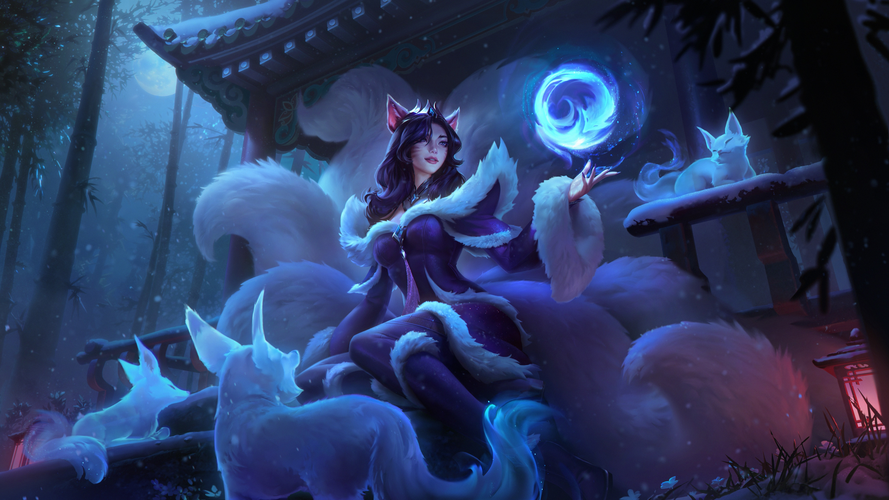
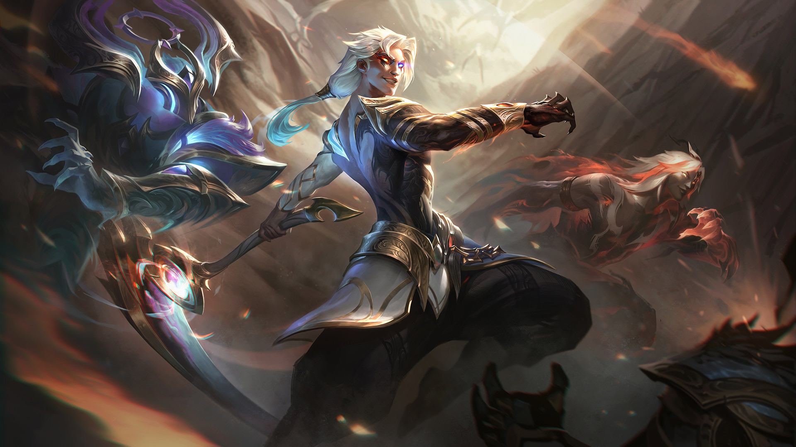

League of Legends
Conheça os Campeões de League of Legends
Descubra 4 campeões selecionados de League of Legends, cada um com suas habilidades únicas e estilos de jogo diferenciados. Explore os detalhes desses personagens e veja como eles podem impactar suas batalhas no campo da justiça.
Ahri
Ahri é uma maga com habilidades de feitiçaria e controle, ideal para jogadores que gostam de jogo estratégico.
Kayn
Kayn é um assassino versátil, capaz de alterar sua forma e dominar a batalha.
Yasuo

Yasuo é um espadachim ágil que utiliza o vento em suas habilidades de combate.
Zed

Zed é um assassino ágil especializado em causar dano explosivo com suas sombras e habilidades de alta mobilidade para eliminar inimigos rapidamente.